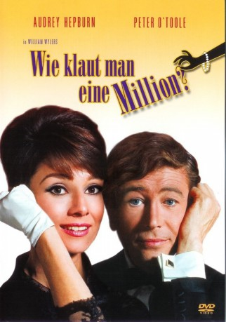

#5483 Wie klaut man eine Million?
Alternativ: How to Steal a Million
 
 IMDB-Wertung: 7.6 / 10
IMDB-Wertung: 7.6 / 10  Metascore: 0
Metascore: 0 
Als Tochter eines begnadeten Kunstfälschers hat es die schöne Nicole nicht immer ganz leicht. Einerseits liebt sie ihren Vater abgöttisch, aber andererseits kann sie sich mit dem “Beruf” überhaupt nicht anfreunden. Als sie den vermeintlichen Einbrecher Simon Dermott in der Villa ihres Vaters auf frischer Tat ertappt, ändert sich ihr Leben total. Er ist nämlich gar kein “normaler” Dieb, sondern ein Detektiv, der ihrem Vater auf die Schliche kommen will.
Jahr: 1966
Dauer: 118 Minuten
FSK: 12
Land: USA Studio: Twentieth Century-Fox Film CorporationTonspuren: DD2.0 - ,
Untertitel: Englisch,
Auflösung: 720p (1280x544) Größe: 4648 MB
Genre: Komödie, Krimi, Liebe
Regisseur: William Wyler
Drehbuch: Sascha Bigler
Soundtrack:
Darsteller:
 Audrey Hepburn als Nicole
Audrey Hepburn als Nicole Peter O'Toole als Simon Dermott
Peter O'Toole als Simon Dermott Eli Wallach als Davis Leland
Eli Wallach als Davis Leland Hugh Griffith als Bonnet
Hugh Griffith als Bonnet Charles Boyer als DeSolnay
Charles Boyer als DeSolnay- Fernand Gravey als Grammont
 Marcel Dalio als Senor Paravideo
Marcel Dalio als Senor Paravideo- Georg Stanford Brown als Waiter , uncredited
 Jacques Marin als Chief Guard
Jacques Marin als Chief Guard- Moustache als Guard
- Roger Tréville als Auctioneer
- Edward Malin als Insurance Clerk
- Bert Bertram als Marcel
- Louise Chevalier als Cleaning Woman , uncredited
- Rémy Longa als Young Man , uncredited
- Jacques Ramade als (uncredited
Datei: X:\1966\Wie klaut man eine Million (1966, FSK12, 1280x544).mkv seit 06.02.2017
Festplatte: HD 1900-1970
 Es gibt insgesamt 27 Filme in der Gruppe '1966'
Es gibt insgesamt 27 Filme in der Gruppe '1966'